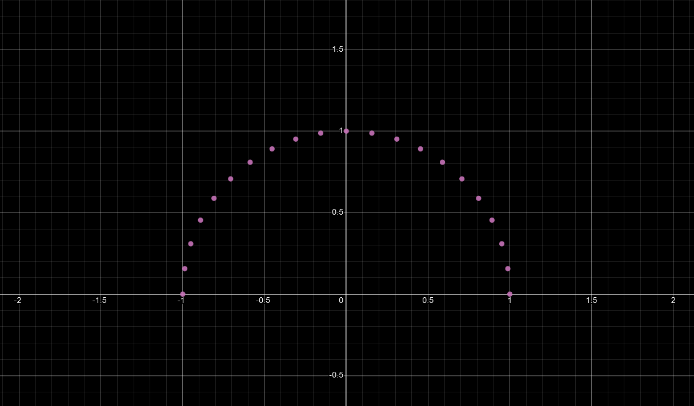
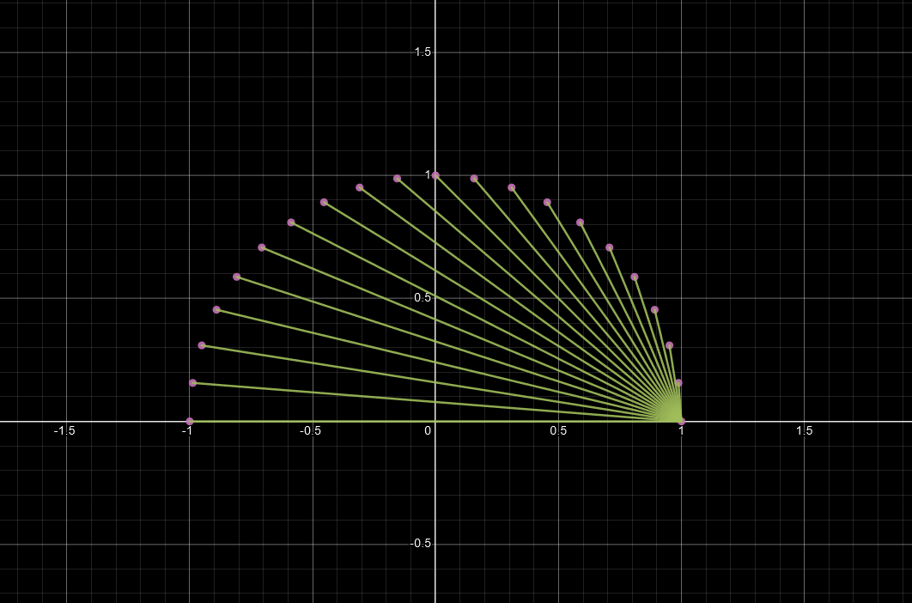
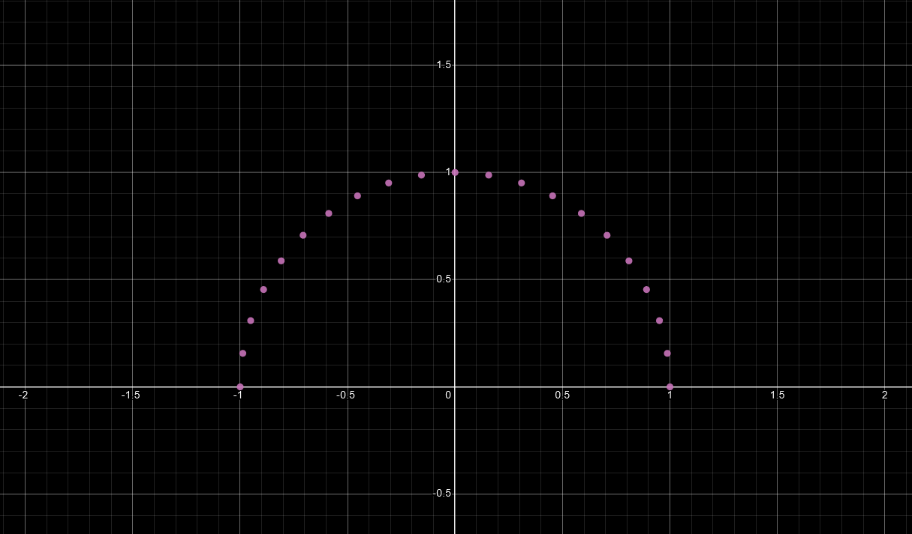
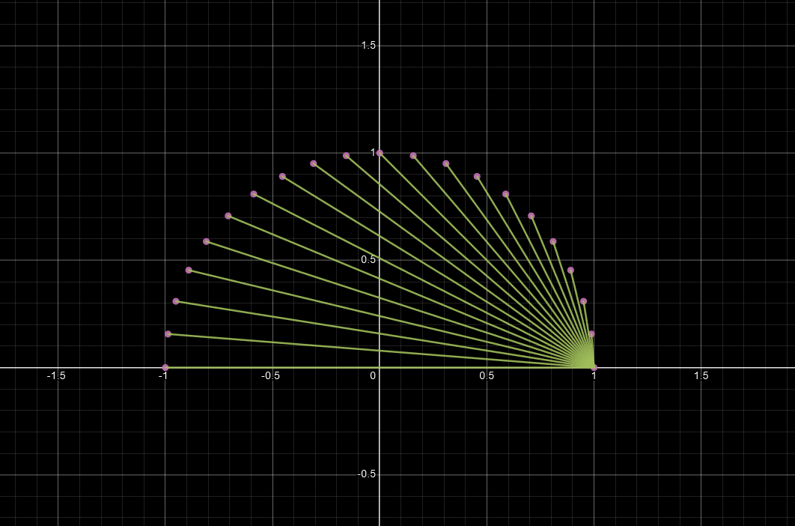
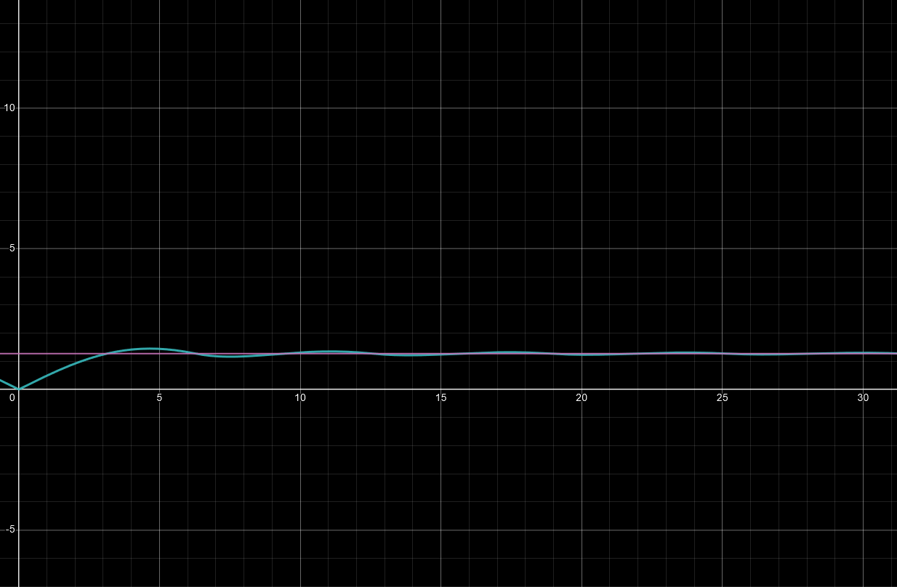

An interesting sum
Let us start with the unit circle and let us distribute points on the unit circle evenly. In other words, we are going to pick a small value for \(\theta\) and we are going to create a set of points \(S\), where:
\[
S = \{(\cos n\theta, \sin n\theta) \ | \ n \in \mathbb{N}, 0\le n\theta\le\pi\}
\]
This will yeild the following set of points (for n = 20):
 Furthermore we take the sum of the distance of the points to \(A(1,0)\):
 \[ N = \sum_{k=0}^{n} \sqrt{(\cos(\theta) - 1)^2+\sin^2\theta} \] Note that we can find a closed form of \(\theta\) in terms of \(n\) and \(k\): \[ \theta=\frac{k\pi}{n} \] Thus: \[ N = \sum_{k=0}^{n}\sqrt{\left(\cos\left(\frac{\pi k}{m}\right)-1\right)^{2}+\sin^{2}\left(\frac{\pi k}{m}\right)} \] This simplifies: \[ \begin{flalign} N &= \sum_{k=0}^{n}\sqrt{\cos^2\theta+\sin^2\theta-2\cos\theta+1}\\ &= \sum_{k=0}^{n}\sqrt{2-2\cos\theta}\\ &= \sum_{k=0}^{n}\sqrt{2}\sqrt{1-\cos\theta}\\ &= \sqrt{2}\sum_{k=0}^{n}\sqrt{1-\cos\frac{k\pi}{n}} \end{flalign} \] By taking the \(\lim_{n \to \infty} N\), \(N\) will clearly diverge. But, if we take the following limit: \[ \lim_{n \to \infty} \frac{N}{n} \to \mbox{constant?} \] This seems to converge to a constant. We can write this with the infinite sum that we found: \[ \begin{flalign} V &= \lim_{n\to\infty}\frac{\sqrt{2}\sum_{k=0}^{n}\sqrt{1-\cos\frac{k\pi}{n}}}{n}\\ &= \lim_{n\to\infty}\sqrt{2}\sum_{k=0}^{n}\frac{\sqrt{1-\cos\frac{k\pi}{n}}}{n} \end{flalign} \] Lets make a variable change: Let \(\theta=\frac{\pi}{n} \Rightarrow n=\frac{\pi}{\theta}\) and since \(n\to\infty\Rightarrow\theta\to 0\). Thus, the limit \(V\) becomes: \[ V = \lim_{\theta\to0} \sqrt{2}\sum_{k=0}^{\pi/\theta}\frac{\theta}{\pi}\sqrt{1-\cos(k\theta)} \] This can also be written as an integral: \[ V = \sqrt{2}\int_{0}^{\pi}\sqrt{1-\cos(\theta)}\ \frac{d\theta}{\pi} \] We can solve the integral with some standard integration technics: \[ V = \frac{\sqrt{2}}{\pi}\int_{0}^{\pi}\sqrt{1-\cos{\theta}}\ d\theta \] We know that: \[ \begin{flalign} \sin\frac{\theta}{2}&=\sqrt{\frac{1-\cos{\theta}}{2}} \\ \Longleftrightarrow 1-\cos{\theta} &= 2\sin^2{\frac{\theta}{2}} \end{flalign} \] Using this identity in the integral: \[ \begin{flalign} V &= \frac{\sqrt{2}}{\pi}\int_{0}^{\pi}\sqrt{2\sin^2{\frac{\theta}{2}}}\ d\theta\\ &= \frac{2}{\pi}\int_0^\pi \left|\sin\frac{\theta}{2}\right|\ d\theta \end{flalign} \] Since \(0\le\theta\le\pi\), \(\sin(\theta/2) \ge 0\). That means that: \[ V = \frac{2}{\pi}\int_0^\pi \sin\frac{\theta}{2}\ d\theta \] Let \(u=\theta/2 \Rightarrow 2du=d\theta\): \[ \begin{flalign} V &= \frac{2}{\pi}\int_0^{\pi/2}2\sin u\ du\\ &= \frac{4}{\pi}\cos u {\Huge|}_0^{\pi/2}\\ \Longleftrightarrow V &= \frac{4}{\pi}\left(\cos\frac{\pi}{2} - \cos0\right)\\ \Longleftrightarrow V &= \frac{4}{\pi} \end{flalign} \] Writing \(V\) as the infinite sum we found: \[ \lim_{n\to\infty}\sum_{k=0}^n\frac{\sqrt2\sqrt{1-\cos\left(\frac{k\pi}{n}\right)}}{n}=\frac{4}{\pi} \]
The cyan curve is the function \(V(\alpha)\) and the pink curve is the line \(y=\frac{4}{\pi}x\). It seams that \(V(\alpha)\) converges to \(\frac{4}{\pi}\) as \(\alpha\to+\infty\). To prove that, we can construct the integral like before: Let \(\theta=\frac{\alpha}{n} \Rightarrow n = \frac{\alpha}{\theta}\): \[ V(\alpha)=\frac{\sqrt2}{\alpha}\lim_{n\to\infty}\sum_{k=0}^{\alpha/\theta}\theta\sqrt{1-\cos(k\theta)} \] The above limit-sum is the riemann sum of the following integral: \[ V(\alpha)=\frac{\sqrt2}{\alpha}\int_0^\alpha\sqrt{1-\cos\theta}\ d\theta \] Like in the case of \(\alpha=\pi\), we can prove that the above integral is equal to: \[ V(\alpha) = \frac{2}{\alpha}\int_0^\alpha\left|\sin\frac{\theta}{2}\right|\ d\theta \] Let \(u=\theta/2 \Rightarrow 2du=d\theta\): \[ V(\alpha)=\frac{4}{\pi}\int_0^{\alpha/2}\left|\sin\theta\right|\ d\theta \] We can split the above integral line so: \[ V(\alpha)=\frac{4}{a}\left[ \int_0^\pi\sin\theta\ d\theta -\int_\pi^{2\pi}\sin\theta\ d\theta -... +\left|\int_{p\pi}^{\alpha/2}\sin\theta\ d\theta\right| \right] \] where \(p\) is the biggest integer s.t. \(p\pi \le \alpha/2\). The absolute in the last integral can come outside of the integral because the \(\sin\theta\) doesn't change its sign for \(\theta \in [p\pi, \alpha/2]\). The other integral are quite easy to compute: \[ \begin{flalign} (-1)^{k}\int_{k\pi}^{(k+1)\pi}\sin\theta\ d\theta &= (-1)^{k}(-\cos\theta){\Huge|}_{k\pi}^{(k+1)\pi}\\ &= (-1)^{k}(-\cos((k+1)\pi)+\cos(k\pi))\\ &= (-1)^{k}(-(-1)^{k+1}+(-1)^k)\\ &= -(-1)^{2k+1}+(-1)^{2k}\\ &= 2 \end{flalign} \] This means: \[ V(\alpha)=\frac{4}{\alpha}\left[2p+\left|\int_{p\pi}^{\alpha/2}\sin\theta\ d\theta\right|\right], \ \ (1) \] Since \(p\) is the biggest integer s.t. \(p\pi\le\alpha/2\), the following inequality should also be true: \[ \begin{flalign} p\pi &\le\frac{\alpha}{2}<(p+1)\pi\\ \Longrightarrow\ 2p\pi&\le\alpha < 2(p+1)\pi \end{flalign} \] Because \(\sin\theta\) is monotone for \(p\pi\le\theta<(p+1)\pi\) and by the ineuqality above, we have: \[ \begin{flalign} \left|\int_{p\pi}^{p\pi}\sin\theta\ d\theta\right| &<\left|\int_{p\pi}^{\alpha/2}\sin\theta\ d\theta\right| <\left|\int_{p\pi}^{(p+1)\pi}\sin\theta\ d\theta\right|\\ \Longrightarrow0&<\left|\int_{p\pi}^{\alpha/2}\sin\theta\ d\theta\right| <\left|(\cos\theta){\Huge|}_{p\pi}^{(p+1)\pi}\right|\\ \Longrightarrow0& <\left|\int_{p\pi}^{\alpha/2}\sin\theta\ d\theta\right| < 2 \end{flalign} \] Using the above inequality in \((1)\): \[ \begin{flalign} 2p\frac{4}{\alpha} < V(\alpha)<\left[2p + 2\right]\frac{4}{\alpha}\\ \Longrightarrow2p\frac{4}{\alpha} < V(\alpha) < 2\left[p + 1\right]\frac{4}{\alpha}\\ \end{flalign} \] From the inequality \(2p\pi\le\alpha < 2(p+1)\pi\), we can conclude that \[ \frac4{2p\pi}\ge\frac4\alpha>\frac4{2(p+1)\pi} \] Using the above inequality: \[ \begin{flalign} 2p\frac4{2(p+1)\pi}& < V(\alpha) < 2(p+1)\frac4{2p\pi}\\ \\ \Rightarrow\frac{4p}{(p+1)\pi}& < V(\alpha)<\frac{4(p+1)}{p\pi} \end{flalign} \] Taking the limit as \(\alpha\to+\infty\Leftrightarrow p\to+\infty\): \[ \begin{flalign} \lim_{\alpha\to+\infty}^{p\to+\infty}\frac{4p}{(p+1)\pi}&\le V(\alpha)\le\frac{4(p+1)}{p\pi}\\ \lim_{\alpha\to+\infty}\frac{4}{\pi}&\le V(\alpha)\le\frac{4}{\pi} \end{flalign} \] By the squeeze therom: \[ \lim_{\alpha\to+\infty}V(\alpha) = \frac{4}{\pi} \] Which, by the definition of \(V\): \[ \lim_{\alpha\to+\infty}\lim_{n\to\infty}\sum_{k=0}^n\frac{\sqrt2\sqrt{1-\cos\left(\frac{k\alpha}{n}\right)}}{n}=\frac{4}{\pi} \]
 Furthermore we take the sum of the distance of the points to \(A(1,0)\):
 \[ N = \sum_{k=0}^{n} \sqrt{(\cos(\theta) - 1)^2+\sin^2\theta} \] Note that we can find a closed form of \(\theta\) in terms of \(n\) and \(k\): \[ \theta=\frac{k\pi}{n} \] Thus: \[ N = \sum_{k=0}^{n}\sqrt{\left(\cos\left(\frac{\pi k}{m}\right)-1\right)^{2}+\sin^{2}\left(\frac{\pi k}{m}\right)} \] This simplifies: \[ \begin{flalign} N &= \sum_{k=0}^{n}\sqrt{\cos^2\theta+\sin^2\theta-2\cos\theta+1}\\ &= \sum_{k=0}^{n}\sqrt{2-2\cos\theta}\\ &= \sum_{k=0}^{n}\sqrt{2}\sqrt{1-\cos\theta}\\ &= \sqrt{2}\sum_{k=0}^{n}\sqrt{1-\cos\frac{k\pi}{n}} \end{flalign} \] By taking the \(\lim_{n \to \infty} N\), \(N\) will clearly diverge. But, if we take the following limit: \[ \lim_{n \to \infty} \frac{N}{n} \to \mbox{constant?} \] This seems to converge to a constant. We can write this with the infinite sum that we found: \[ \begin{flalign} V &= \lim_{n\to\infty}\frac{\sqrt{2}\sum_{k=0}^{n}\sqrt{1-\cos\frac{k\pi}{n}}}{n}\\ &= \lim_{n\to\infty}\sqrt{2}\sum_{k=0}^{n}\frac{\sqrt{1-\cos\frac{k\pi}{n}}}{n} \end{flalign} \] Lets make a variable change: Let \(\theta=\frac{\pi}{n} \Rightarrow n=\frac{\pi}{\theta}\) and since \(n\to\infty\Rightarrow\theta\to 0\). Thus, the limit \(V\) becomes: \[ V = \lim_{\theta\to0} \sqrt{2}\sum_{k=0}^{\pi/\theta}\frac{\theta}{\pi}\sqrt{1-\cos(k\theta)} \] This can also be written as an integral: \[ V = \sqrt{2}\int_{0}^{\pi}\sqrt{1-\cos(\theta)}\ \frac{d\theta}{\pi} \] We can solve the integral with some standard integration technics: \[ V = \frac{\sqrt{2}}{\pi}\int_{0}^{\pi}\sqrt{1-\cos{\theta}}\ d\theta \] We know that: \[ \begin{flalign} \sin\frac{\theta}{2}&=\sqrt{\frac{1-\cos{\theta}}{2}} \\ \Longleftrightarrow 1-\cos{\theta} &= 2\sin^2{\frac{\theta}{2}} \end{flalign} \] Using this identity in the integral: \[ \begin{flalign} V &= \frac{\sqrt{2}}{\pi}\int_{0}^{\pi}\sqrt{2\sin^2{\frac{\theta}{2}}}\ d\theta\\ &= \frac{2}{\pi}\int_0^\pi \left|\sin\frac{\theta}{2}\right|\ d\theta \end{flalign} \] Since \(0\le\theta\le\pi\), \(\sin(\theta/2) \ge 0\). That means that: \[ V = \frac{2}{\pi}\int_0^\pi \sin\frac{\theta}{2}\ d\theta \] Let \(u=\theta/2 \Rightarrow 2du=d\theta\): \[ \begin{flalign} V &= \frac{2}{\pi}\int_0^{\pi/2}2\sin u\ du\\ &= \frac{4}{\pi}\cos u {\Huge|}_0^{\pi/2}\\ \Longleftrightarrow V &= \frac{4}{\pi}\left(\cos\frac{\pi}{2} - \cos0\right)\\ \Longleftrightarrow V &= \frac{4}{\pi} \end{flalign} \] Writing \(V\) as the infinite sum we found: \[ \lim_{n\to\infty}\sum_{k=0}^n\frac{\sqrt2\sqrt{1-\cos\left(\frac{k\pi}{n}\right)}}{n}=\frac{4}{\pi} \]
A General Case
Lets see what happens when we evaluate the same sum, but instead of \(\pi\), we have an arbitrary angle \(\alpha\). This we be a function of \(\alpha\) that we can plot: \[ V(\alpha)=\lim_{n\to\infty}\sum_{k=0}^n\frac{\sqrt2\sqrt{1-\cos\left(\frac{k\alpha}{n}\right)}}{n} \] The cyan curve is the function \(V(\alpha)\) and the pink curve is the line \(y=\frac{4}{\pi}x\). It seams that \(V(\alpha)\) converges to \(\frac{4}{\pi}\) as \(\alpha\to+\infty\). To prove that, we can construct the integral like before: Let \(\theta=\frac{\alpha}{n} \Rightarrow n = \frac{\alpha}{\theta}\): \[ V(\alpha)=\frac{\sqrt2}{\alpha}\lim_{n\to\infty}\sum_{k=0}^{\alpha/\theta}\theta\sqrt{1-\cos(k\theta)} \] The above limit-sum is the riemann sum of the following integral: \[ V(\alpha)=\frac{\sqrt2}{\alpha}\int_0^\alpha\sqrt{1-\cos\theta}\ d\theta \] Like in the case of \(\alpha=\pi\), we can prove that the above integral is equal to: \[ V(\alpha) = \frac{2}{\alpha}\int_0^\alpha\left|\sin\frac{\theta}{2}\right|\ d\theta \] Let \(u=\theta/2 \Rightarrow 2du=d\theta\): \[ V(\alpha)=\frac{4}{\pi}\int_0^{\alpha/2}\left|\sin\theta\right|\ d\theta \] We can split the above integral line so: \[ V(\alpha)=\frac{4}{a}\left[ \int_0^\pi\sin\theta\ d\theta -\int_\pi^{2\pi}\sin\theta\ d\theta -... +\left|\int_{p\pi}^{\alpha/2}\sin\theta\ d\theta\right| \right] \] where \(p\) is the biggest integer s.t. \(p\pi \le \alpha/2\). The absolute in the last integral can come outside of the integral because the \(\sin\theta\) doesn't change its sign for \(\theta \in [p\pi, \alpha/2]\). The other integral are quite easy to compute: \[ \begin{flalign} (-1)^{k}\int_{k\pi}^{(k+1)\pi}\sin\theta\ d\theta &= (-1)^{k}(-\cos\theta){\Huge|}_{k\pi}^{(k+1)\pi}\\ &= (-1)^{k}(-\cos((k+1)\pi)+\cos(k\pi))\\ &= (-1)^{k}(-(-1)^{k+1}+(-1)^k)\\ &= -(-1)^{2k+1}+(-1)^{2k}\\ &= 2 \end{flalign} \] This means: \[ V(\alpha)=\frac{4}{\alpha}\left[2p+\left|\int_{p\pi}^{\alpha/2}\sin\theta\ d\theta\right|\right], \ \ (1) \] Since \(p\) is the biggest integer s.t. \(p\pi\le\alpha/2\), the following inequality should also be true: \[ \begin{flalign} p\pi &\le\frac{\alpha}{2}<(p+1)\pi\\ \Longrightarrow\ 2p\pi&\le\alpha < 2(p+1)\pi \end{flalign} \] Because \(\sin\theta\) is monotone for \(p\pi\le\theta<(p+1)\pi\) and by the ineuqality above, we have: \[ \begin{flalign} \left|\int_{p\pi}^{p\pi}\sin\theta\ d\theta\right| &<\left|\int_{p\pi}^{\alpha/2}\sin\theta\ d\theta\right| <\left|\int_{p\pi}^{(p+1)\pi}\sin\theta\ d\theta\right|\\ \Longrightarrow0&<\left|\int_{p\pi}^{\alpha/2}\sin\theta\ d\theta\right| <\left|(\cos\theta){\Huge|}_{p\pi}^{(p+1)\pi}\right|\\ \Longrightarrow0& <\left|\int_{p\pi}^{\alpha/2}\sin\theta\ d\theta\right| < 2 \end{flalign} \] Using the above inequality in \((1)\): \[ \begin{flalign} 2p\frac{4}{\alpha} < V(\alpha)<\left[2p + 2\right]\frac{4}{\alpha}\\ \Longrightarrow2p\frac{4}{\alpha} < V(\alpha) < 2\left[p + 1\right]\frac{4}{\alpha}\\ \end{flalign} \] From the inequality \(2p\pi\le\alpha < 2(p+1)\pi\), we can conclude that \[ \frac4{2p\pi}\ge\frac4\alpha>\frac4{2(p+1)\pi} \] Using the above inequality: \[ \begin{flalign} 2p\frac4{2(p+1)\pi}& < V(\alpha) < 2(p+1)\frac4{2p\pi}\\ \\ \Rightarrow\frac{4p}{(p+1)\pi}& < V(\alpha)<\frac{4(p+1)}{p\pi} \end{flalign} \] Taking the limit as \(\alpha\to+\infty\Leftrightarrow p\to+\infty\): \[ \begin{flalign} \lim_{\alpha\to+\infty}^{p\to+\infty}\frac{4p}{(p+1)\pi}&\le V(\alpha)\le\frac{4(p+1)}{p\pi}\\ \lim_{\alpha\to+\infty}\frac{4}{\pi}&\le V(\alpha)\le\frac{4}{\pi} \end{flalign} \] By the squeeze therom: \[ \lim_{\alpha\to+\infty}V(\alpha) = \frac{4}{\pi} \] Which, by the definition of \(V\): \[ \lim_{\alpha\to+\infty}\lim_{n\to\infty}\sum_{k=0}^n\frac{\sqrt2\sqrt{1-\cos\left(\frac{k\alpha}{n}\right)}}{n}=\frac{4}{\pi} \]